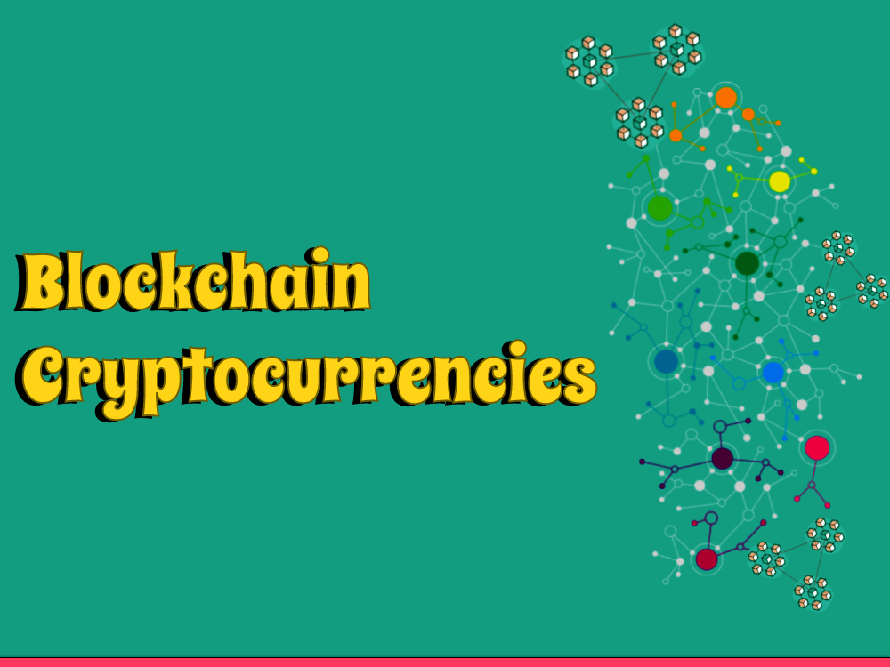

Blockchain - Cryptocurrencies
A beginner's guide related to Blockchain - Cryptocurrencies
Welcome to the intriguing universe of blockchain and digital currencies! In this article, we will dive into the progressive innovation that is reshaping ventures and economies all over the planet. Go along with us as we investigate the key ideas, advantages, and potential difficulties related with blockchain and its most eminent application, digital currencies.
Section 1: Grasping Blockchain
1.1 Decentralization and Transparency
Blockchain, at its center, is a decentralized computerized record that records exchanges across various PCs or hubs. By disposing of the requirement for a focal power, it guarantees straightforwardness, trust, and permanence.
1.2 Dispersed Record Innovation (DLT)
Through its dispersed nature, blockchain empowers each member in an organization to approach a similar form of truth. This straightforward and alter safe record guarantees the honesty of information and decreases the gamble of extortion.
Section 2: Cryptographic forms of money: Breaking Obstructions in Finance
2.1 What are Cryptocurrencies?
Digital currencies are advanced or virtual monetary standards that use cryptography for secure monetary exchanges. They work freely of conventional financial frameworks, permitting clients to send, get, and store assets without middle people.
2.2 Bitcoin: The Pioneer
Bitcoin, the first and most eminent digital money, acquainted the world with blockchain innovation. Made by an unknown individual or gathering named Satoshi Nakamoto, Bitcoin launched the decentralized insurgency and prepared for endless other digital currencies.
2.3 Altcoins and Tokens
Past Bitcoin, a great many elective digital currencies, known as altcoins, have arisen. Each altcoin offers novel highlights, like improved protection, quicker exchanges, or concentrated applications. Furthermore, tokens are computerized resources based on existing blockchain stages, addressing responsibility for explicit resource or utility inside a task's environment.
Section 3: The Advantages and Capability of Blockchain
3.1 Upgraded Security and Misrepresentation Prevention
Blockchain's cryptographic calculations make it very hard for programmers to mess with information, upgrading security and lessening the gamble of extortion in monetary exchanges, supply chains, and personality the executives.
3.2 Straightforward and Discernible Transactions
By recording all exchanges on a permanent record, blockchain guarantees straightforwardness and responsibility. This element holds colossal potential in ventures like operations, where production network following and genuineness confirmation are central.
3.3 Monetary Incorporation and Empowerment
Blockchain innovation empowers monetary administrations to come to the unbanked and underbanked populaces around the world. Digital currencies give people admittance to a safe and reasonable option in contrast to customary banking, encouraging monetary consideration and financial strengthening.
Section 4: Difficulties and Future Outlook
4.1 Versatility and Energy Consumption
As blockchain innovation acquires standard reception, it faces difficulties connected with adaptability and energy utilization. Endeavors are in progress to foster versatile arrangements and all the more harmless to the ecosystem agreement systems to address these worries.
4.2 Administrative Landscape
State run administrations overall are wrestling with the guideline of digital currencies. Finding some kind of harmony between purchaser insurance, monetary security, and advancement is fundamental for cultivate the development of blockchain innovation while relieving possible dangers.
4.3 Blockchain Past Finance
While digital forms of money rule the blockchain scene, the innovation holds guarantee in different areas. Applications incorporate decentralized administration, computerized personalities, licensed innovation insurance, and production network the board, to give some examples.
Conclusion
Blockchain and cryptographic forms of money have upset conventional frameworks, enabling people and associations with a straightforward, decentralized, and secure method for trade. As the innovation keeps on advancing, it presents potential open doors and difficulties that will shape the eventual fate of money, administration, and various different enterprises.
Thank you for reading, and stay tuned for more exciting insights into the world of blockchain and cryptocurrencies!